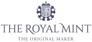

Ling Yuan.
Forecasting, operations research & decisions under uncertainty.
I am a PhD researcher at Cardiff Business School and the PARC Institute of Manufacturing, Logistics and Inventory, Cardiff University. My research explores forecasting and decision-making in circular operations, remanufacturing and revenue management.
Cardiff, United Kingdom
RESEARCH CONNECTIONS
Across research, policy & practice.
Selected organisations connected with my research, wider engagement, and doctoral support.
Industry partners

Policy & community engagement
01 / LATEST UPDATES
News.
Research milestones, presentations and conversations beyond the desk.
Loading updates…
02 / RESEARCH
Research interests.
My work connects models of uncertainty with operational decisions.